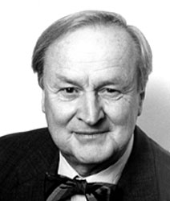

Arvid Carlsson
Per Arvid Emil Carlsson, född 25 januari 1923 i Uppsala
Han är en svensk farmakolog och professor emeritus vid Göteborgs universitet, mottagare av Nobelpriset i fysiologi eller medicin år 2000. Har en dotter Maria Carlsson som jobbar inom neurofarmakologi.
Arvid Carlsson är son till professor Gottfrid Carlsson och fil. dr Lizzie, född Steffenburg, och bror till Sten Carlsson. 1951 blev han både med.lic. och med.dr vid Lunds universitet, där han sedan anställdes som extra ordinarie docent i farmakologi. Efter några år som laborator där, kallades han 1959 till Göteborgs universitet som professor i farmakologi, en befattning han hade till 1989 då han gick i pension. Carlsson är ledamot av Kungliga Vetenskapsakademien sedan 1976 och är idag trots sin relativt höga ålder styrelseledamot i flera forskningsföretag.
Carlsson tilldelades år 2000 nobelpriset fysiologi eller medicin för sina "upptäckter rörande signalsubstanser i nervsystemet". Bland annat studerade han signalsubstanserna dopamin och serotonin. Han delade priset med amerikanerna Paul Greengard och Eric R. Kandel. 1979 tilldelades han Wolfpriset i medicin tillsammans med Roger W. Sperry och Oleh Hornykiewicz.
Signalerna från en nervcell till en annan överförs med hjälp av olika signalsubstanser. Signalöverföringen sker i speciella kontaktpunkter, så kallade synapser. En enda nervcell kan ha tusentals kontaktpunkter med andra nervceller.
Carlsson har upptäckt att dopamin är en sådan signalsubstans i hjärnan och att dopamin har stor betydelse för kontrollen av våra rörelser. Hans forskningsrön ledde i sin tur till insikten att Parkinsons sjukdom orsakas av dopaminbrist i vissa delar av hjärnan. Detta ledde sedan till framställandet av Levodopa, ett effektivt läkemedel mot denna sjukdom.
Källa: Wikipedia